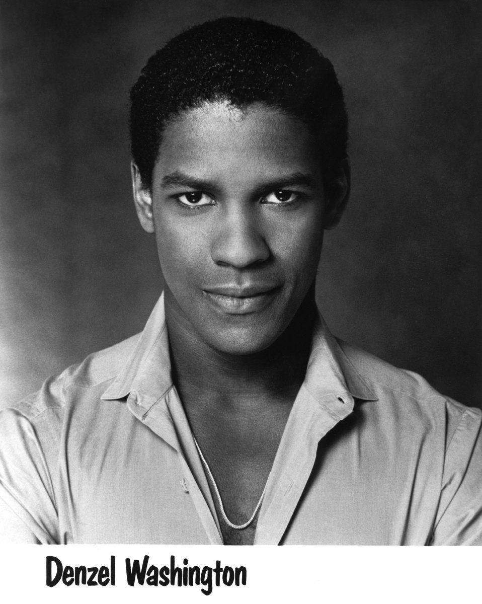

"You pray for rain , you gotta deal with the mud too"

Here is the early life of Denzel Washington
In 1990- Washington starred as Bleek Gilliam in the Spike Lee film Mo' Better Blues. In 1991, he starred as Demetrius Williams in the romantic drama Mississippi Masala. Washington was reunited with Lee to play one of his most critically acclaimed roles, the title character of 1992's Malcolm X.
In 1993--His performance as the black nationalist leader earned him another nomination for the Academy Award for Best Actor. The next year, he played the lawyer of a gay man with AIDS in the 1993 film Philadelphia.
In 1996-- he played a U.S. Army officer who, despondent about a deadly mistake he made, investigates a female chopper commander's worthiness for the Medal of Honor in Courage Under Fire with Meg Ryan. In 1996, he appeared with Whitney Houston in the romantic drama The Preacher's Wife
In 1998-- Washington starred in Spike Lee's film He Got Game. Washington played a father serving a six-year prison term when the prison warden offers him a temporary parole to convince his top-ranked high-school basketball player son (Ray Allen) to sign with the governor's alma mater, Big State. The film was Washington's third collaboration with Lee.
In 1999-- Washington starred in The Hurricane, a film about boxer Rubin 'Hurricane' Carter, whose conviction for triple murder was overturned after he spent almost 20 years in prison. Washington did receive a Golden Globe Award in 2000 and a Silver Bear Award at the Berlin International Film Festival for the role.